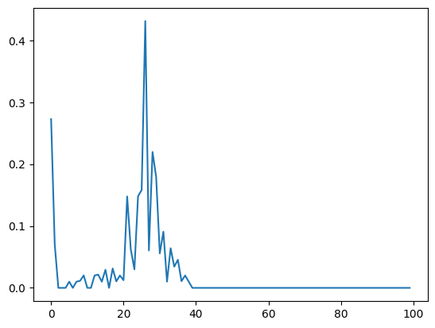
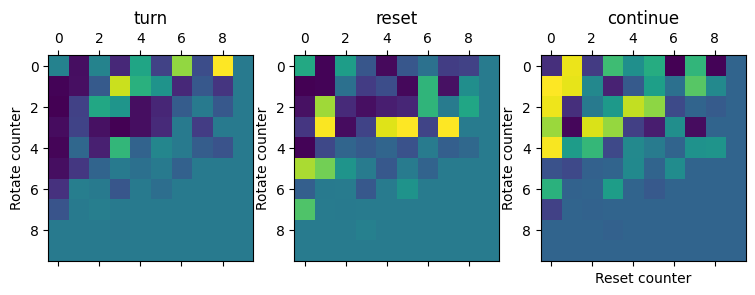

raise('skip_exec not working!')Numba / Dev Reinforcement learning framework
This notebook gathers the functions creating different kinds of environments for foraging and target search in various scenarios.
Helpers
isBetween
isBetween_c_Vec_numba
isBetween_c_Vec_numba (a, b, c, r)
Checks whether point c is crossing the line formed with point a and b.
| Type | Details | |
|---|---|---|
| a | tensor, shape = (1,2) | Previous position. |
| b | tensor, shape = (1,2) | Current position. |
| c | tensor, shape = (Nt,2) | Positions of all targets. |
| r | int/float | Target radius. |
| Returns | array of boolean values | True at the indices of found targets. |
compiling = isBetween_c_Vec_numba(np.array([0.1,1]), np.array([1,3]), np.random.rand(100,2), 0.00001)4.48 µs ± 16.7 ns per loop (mean ± std. dev. of 7 runs, 100,000 loops each)from rl_opts.utils import isBetween_c_Vec as oldbetween46.9 µs ± 442 ns per loop (mean ± std. dev. of 7 runs, 10,000 loops each)Pareto sampling
pareto_sample
pareto_sample (alpha, xm, size=1)
Random sampling from array with probs
rand_choice_nb
rand_choice_nb (arr, prob)
:param arr: A 1D numpy array of values to sample from. :param prob: A 1D numpy array of probabilities for the given samples. :return: A random sample from the given array with a given probability.
Environments
TargetEnv
TargetEnv
TargetEnv (*args, **kwargs)
Class defining the foraging environment. It includes the methods needed to place several agents to the world.
Runtime testing
env = TargetEnv(Nt = 1000,
L = 123,
r = 50,
lc = np.array([[0.1],[1]]),
lc_distribution = 'pareto')
compiling = env.check_encounter()15.5 µs ± 892 ns per loop (mean ± std. dev. of 7 runs, 10,000 loops each)env = TargetEnv(Nt = 1000,
L = 123,
r = 50,
lc = np.array([[0.1, 0.3, 0.5, 0.5],[0.8, 0.1, 0.05, 0.05]]))
compiling = env.check_encounter()12 µs ± 7.38 ns per loop (mean ± std. dev. of 7 runs, 100,000 loops each)from rl_opts.rl_framework.legacy import TargetEnv as oldEnvoenv = oldEnv(Nt = 100,
L = 123,
r = 0.2,
lc = 1)/home/gorka/github/fork_rl_opts/rl_opts/utils.py:36: RuntimeWarning: invalid value encountered in divide
mask[np.argwhere(np.abs(np.cross(b-a, c-a))/np.linalg.norm(b-a) > r)] = False232 µs ± 388 ns per loop (mean ± std. dev. of 7 runs, 1,000 loops each)@jitclass
class move():
env : TargetEnv
def __init__(self,
Nt = 1000,
L = 123.0,
r = 0.2,
lc = 1.0,
TIME_EP = 10):
self.env = TargetEnv(Nt, L, r, np.array([[0.1, 0.3, 0.5, 0.5],[0.8, 0.1, 0.05, 0.05]]), 1, 1, False, 'power_law')
def run(self, t):
for time in range(t):
self.env.update_pos(False)
self.env.check_encounter()
self.env.check_bc()k = move()
onerun = k.run(5)123 ms ± 61.2 µs per loop (mean ± std. dev. of 7 runs, 10 loops each)from rl_opts.rl_framework.legacy import TargetEnv as oldEnvoenv = oldEnv(Nt = 1000,
L = 123,
r = 0.2,
lc = 1)def old_run(t):
for t in range(t):
oenv.update_pos(False)
oenv.check_encounter()
oenv.check_bc()2.85 s ± 48.2 ms per loop (mean ± std. dev. of 7 runs, 1 loop each)Walk from policy
single_agent_walk
single_agent_walk (N_runs, time_ep, policy, env)
multi_agents_walk
multi_agents_walk (N_runs, time_ep, N_agents, Nt=100, L=100, r=0.5, lc=array([[1.], [1.]]), num_agents=1, agent_step=1, destructive_targets=False, lc_distribution='constant', policy=array([[1, 1, 1, 1, 1, 1, 1, 1, 1, 1, 1, 1, 1, 1, 1, 1, 1, 1, 1, 1, 1, 1, 1, 1, 1, 1, 1, 1, 1, 1, 1, 1, 1, 1, 1, 1, 1, 1, 1, 1, 1, 1, 1, 1, 1, 1, 1, 1, 1, 1, 1, 1, 1, 1, 1, 1, 1, 1, 1, 1, 1, 1, 1, 1, 1, 1, 1, 1, 1, 1, 1, 1, 1, 1, 1, 1, 1, 1, 1, 1, 1, 1, 1, 1, 1, 1, 1, 1, 1, 1, 1, 1, 1, 1, 1, 1, 1, 1, 1, 1], [0, 0, 0, 0, 0, 0, 0, 0, 0, 0, 0, 0, 0, 0, 0, 0, 0, 0, 0, 0, 0, 0, 0, 0, 0, 0, 0, 0, 0, 0, 0, 0, 0, 0, 0, 0, 0, 0, 0, 0, 0, 0, 0, 0, 0, 0, 0, 0, 0, 0, 0, 0, 0, 0, 0, 0, 0, 0, 0, 0, 0, 0, 0, 0, 0, 0, 0, 0, 0, 0, 0, 0, 0, 0, 0, 0, 0, 0, 0, 0, 0, 0, 0, 0, 0, 0, 0, 0, 0, 0, 0, 0, 0, 0, 0, 0, 0, 0, 0, 0]]))
ResetEnv
1D
ResetEnv_1D
ResetEnv_1D (*args, **kwargs)
Initialize self. See help(type(self)) for accurate signature.
multi_loop_exp
multi_loop_exp (T, rates, L, D)
multi_loop_constant
multi_loop_constant (T, resets, L, D)
reset_search_loop
reset_search_loop (T, reset_policy, env)
L = 10.0; D = 1/2; T = int(1e3)
resets = np.linspace(70, 150, 40).astype(np.int64)121 µs ± 46.6 µs per loop (mean ± std. dev. of 7 runs, 10,000 loops each)112 µs ± 27.3 µs per loop (mean ± std. dev. of 7 runs, 10,000 loops each)2D
ResetEnv_2D
ResetEnv_2D (*args, **kwargs)
Initialize self. See help(type(self)) for accurate signature.
multi_loop_policies_2D
multi_loop_policies_2D (T, reset_policies, dist_target, radius_target, D)
multi_loop_exp_2D
multi_loop_exp_2D (T, rates, dist_target, radius_target, D)
multi_loop_constant_2D
multi_loop_constant_2D (T, resets, dist_target, radius_target, D)
# from rl_opts.rl_framework_numba import multi_loop_constant_2D
from rl_opts.rl_framework_numba import isBetween_c_Vec_numba, reset_search_loopresets = (3*np.arange(10)+1).astype(int)
T = int(1e6); dist_target = 5; radius_target = 1; D = 1
plt.plot(resets, multi_loop_constant_2D(T, resets, dist_target, radius_target, D))Loop saving position
reset_loop_saving_positions_2D
reset_loop_saving_positions_2D (n_agents, T, reset_policy, dist_target, radius_target, D)
from rl_opts.rl_framework_numba import ResetEnv_2Denv = ResetEnv_2D(dist_target = 5, radius_target = 1, D = 1)
reset = 1000
reset_policy = np.zeros(reset)
reset_policy[reset-1] = 1
# reset_policy[int(reset/2)] = 0.5
dist_target = 2; radius_target = 0.5; D = 0.1
target_position = np.array([dist_target*np.cos(np.pi/4), dist_target*np.sin(np.pi/4)])T = 50
positions = reset_loop_saving_positions_2D(n_agents = int(1e6), T = T, reset_policy = reset_policy,
dist_target = dist_target, radius_target = radius_target, D = D)bins = np.linspace(-dist_target, dist_target, 200)
for t in range(T)[::10]:
h, _ = np.histogram(pos[pos[:,t,0] != 0,t,0], bins = bins);
plt.plot(bins[1:], h/h.max())# import matplotlib.patches as patches
bins = np.linspace(-7, 7, 100)
t = 3
# plt.scatter(target_position[0], target_position[1], s = 10, c = 'r', zorder = 10)
plt.hist2d(pos[pos[:,t,0] != 0,t,0], pos[pos[:,t,0] != 0,t,1], bins = bins, cmap = 'Oranges');
circle = patches.Circle(target_position, radius_target, edgecolor='r', facecolor='none')
plt.gca().add_patch(circle)
# Adjust the aspect ratio
plt.gca().set_aspect('equal', adjustable='box')Animation
animate_positions_with_target
animate_positions_with_target (bins, positions, radius_target, target_position, cmap='Oranges')
bins = np.linspace(-10, 10, 1000)
ani = animation(bins, positions, radius_target, target_position, cmap = 'Greys')
# Display the animation
HTML(ani.to_jshtml())Move + Reset Env
1D
MoveResetEnv_1D
MoveResetEnv_1D (*args, **kwargs)
Initialize self. See help(type(self)) for accurate signature.
env = MoveResetEnv_1D(L = 15, step_length = 1)
pos = []
for time in range(10000):
pos.append(env.position)
env.update_pos(False if np.random.rand() > 0.5 else True,
True if time % 2500 == 0 else False)plt.plot(pos)
plt.axhline(env.L)<matplotlib.lines.Line2D>No-train search loops
multi_loop_MoveReset_allfixed
multi_loop_MoveReset_allfixed (T, resets, turns, L, step_length)
MoveReset_allfixed
MoveReset_allfixed (T, reset, turn, env)
env = MoveResetEnv_1D(L = 5, step_length = 1)
T = int(1e7)
reset = 500
turns = np.arange(10, 20)
L = 5.0
step_length = 1.0
env = MoveResetEnv_1D(L = L, step_length = step_length)
#rewards = MoveReset_allfixed(T = T, reset = reset, turn = turns[0], env = env)
rews = multi_loop_MoveReset_allfixed(T = int(1e8), resets = np.array([500]), turns = np.arange(5, 10), L = 16.0, step_length = 1.0)plt.plot(rews[0]/T)2D
MoveResetEnv_2D
MoveResetEnv_2D (*args, **kwargs)
Open question: here we consider no boundaries, to properly replicate 1D. But in the MoveReset environment there will be boundaries?
L = 100
env = MoveResetEnv_2D(dist_target = 2)
T = 200
pos = np.zeros((2, T))
time_enc = []
for time in (range(T)):
pos[:, time] = env.position
rew = env.update_pos(False if np.random.rand() > 0.5 else True, True if time % 500 == 0 else False)
if rew == 1:
time_enc.append(time)
print(len(time_enc))1fig, ax = plt.subplots()
ax.plot(pos[0], pos[1])
target = plt.Circle(env.target_position[0], env.r, color='C1')
ax.add_patch(target)
for t in time_enc:
plt.plot(pos[0, t:t+2], pos[1, t:t+2], c = 'k', lw = 2)
'''
See that we are seeing here is the reseting step, because the real step in which we crossed the target is not recorded
because we do a env.init_env() when crossing the target and the one that gets out of the function is init_position
''''\nSee that we are seeing here is the reseting step, because the real step in which we crossed the target is not recorded\nbecause we do a env.init_env() when crossing the target and the one that gets out of the function is init_position\n'
Multi-target
MoveResetEnv_multiTarget_2D
MoveResetEnv_multiTarget_2D (*args, **kwargs)
Initialize self. See help(type(self)) for accurate signature.
L = 100
env = MoveResetEnv_2D(L = L, Nt = 100, init_position=np.array([L/2, L/2]))
T = 200
pos = np.zeros((2, T))
target = []
for time in (range(T)):
pos[:, time] = env.position[0]
env.update_pos(False if np.random.rand() > 0.5 else True, True if time % 500 == 0 else False)
if env.check_encounter() == 1: target.append(time)
#env.check_encounter()
env.check_bc()If you want to consider cases with l_c, use MoveResetEnv_withlc_2Dplt.plot(pos[0])
for t in target: plt.axvline(t+1, c = 'k', alpha = 0.3)
plt.axhline(50, c = 'k', alpha = 0.3)<matplotlib.lines.Line2D>With l_c
MoveResetEnv_withlc_2D
MoveResetEnv_withlc_2D (*args, **kwargs)
Class defining the foraging environment. It includes the methods needed to place several agents to the world.
L = 100
env = MoveResetEnv_2D(L = L, Nt = 100, init_positions=np.array([[L/2, L/2]]), lc_distribution = 'none')
T = 200
pos = np.zeros((2, T))
target = []
for time in tqdm(range(T)):
pos[:, time] = env.positions[0]
env.update_pos(False if np.random.rand() > 0.5 else True, True if time % 500 == 0 else False)
if env.check_encounter() == 1: target.append(time)
#env.check_encounter()
env.check_bc()plt.plot(pos[0])
for t in target: plt.axvline(t+1, c = 'k', alpha = 0.3)
plt.axhline(50, c = 'k', alpha = 0.3)<matplotlib.lines.Line2D>No-train search loops
Base MoveRest_2D
multi_loop_MoveReset2D_allfixed
multi_loop_MoveReset2D_allfixed (T, resets, turns, dist_target, radius_target, agent_step)
MoveReset2D_allfixed
MoveReset2D_allfixed (T, reset, turn, env)
from rl_opts.rl_framework_numba import MoveResetEnv_2DT = 1000; reset = 5; turn = 2;
env = MoveResetEnv_2D()
rews = MoveReset2D_allfixed(T, reset, turn, env)rews = multi_loop_MoveReset2D_allfixed(T = int(1e4), resets = np.array([500]), turns = np.arange(2, 10),
dist_target = 5, radius_target = 1.5, agent_step = 1.3)plt.plot(rews[0]/T)Multi target
multi_loop_MoveReset2D_multitarget_allfixed
multi_loop_MoveReset2D_multitarget_allfixed (T, resets, turns, L, Nt, r, step_length, init_position)
MoveReset2D_multitarget_allfixed
MoveReset2D_multitarget_allfixed (T, reset, turn, env)
T = 1000; reset = 5; turn = 2;
env = MoveResetEnv_2D()
rews = MoveReset2D_allfixed(T, reset, turn, env)rews = multi_loop_MoveReset2D_multitarget_allfixed(T = int(1e7), resets = np.array([500]), turns = np.arange(2, 10), L = L,
Nt = Nt, r = 1, init_position = np.array([L/2, L/2]),step_length = step_length)plt.plot(rews[0]/T)Projective Simulation agent
BASE agent
PSAgent
PSAgent (*args, **kwargs)
Base class of a Reinforcement Learning agent based on Projective Simulation, with two-layered network. This class has been adapted from https://github.com/qic-ibk/projectivesimulation
ps = PSAgent(num_actions = 10, num_percepts_list = np.array([15]))
ps.percept_preprocess([0]*ps.num_percepts_list)
ps.probability_distr(0)
observation = [0]*ps.num_percepts_list[0]
ps.deliberate(np.array(observation))
ps.learn(1)
ps.reset_g()
ps.deliberate_fixed_policy(np.array(observation))No fixed policy was given to the agent. The action will be selected randomly.7Forager
Forager
Forager (*args, **kwargs)
*Same as PSAGENT but: num_percepts_list -> state_space
state_space : list List where each entry is the state space of each perceptual feature. E.g. [state space of step counter, state space of density of successful neighbours].*
agent = Forager(num_actions = 2, state_space = np.array([np.arange(100)]))
agent.percept_preprocess([0]*agent.num_percepts_list)
agent.probability_distr(0)
observation = [0]*agent.num_percepts_list[0]
agent.deliberate(np.array(observation))
agent.learn(1)
agent.reset_g()
agent.deliberate_fixed_policy(np.array(observation))
agent.act(0)
agent.get_state()No fixed policy was given to the agent. The action will be selected randomly.array([1])Forager with efficient H update
We use the formula \(H_{t+i} = (1-\gamma)^i H_t + \gamma H_0 \sum_{j=1}^i(1-\gamma)^{j-1}\)
Forager_efficient_H
Forager_efficient_H (*args, **kwargs)
*Same as PSAGENT but: num_percepts_list -> state_space
state_space : list List where each entry is the state space of each perceptual feature. E.g. [state space of step counter, state space of density of successful neighbours].*
Testing
def test_train_loop_Heff(efficient, agent, episodes):
for i in range(episodes):
if efficient:
agent.counter_upd += 1
state = np.array([i])
if i % 2 == 0:
action = 0
else: 1
# here is where glow matrix updates:
agent.g_matrix = (1 - agent.eta_glow_damping) * agent.g_matrix
agent.g_matrix[action, i] += 1 #record latest decision in g_matrix
if i == 2 or i == 6:
reward = 1
else: reward = 0
if efficient:
if reward == 1:
agent._learn_post_reward(reward)
else:
agent.learn(reward)
return agentValue testing
eps = 100
agent_noopt = Forager(num_actions = 2,
state_space = np.array([np.arange(eps)]))
trained_noopt = test_train_loop_Heff(efficient = False, agent = agent_noopt, episodes = eps)
trained_noopt.h_matrix
agent_opt = Forager_efficient_H(num_actions = 2,
state_space = np.array([np.arange(eps)]))
trained = test_train_loop_Heff(efficient=True, agent = agent_opt, episodes = eps)
f'comparison old and efficient: {(trained.h_matrix-trained_noopt.h_matrix).sum()} ||||| IF value != 0, something is wrong!!!''comparison old and efficient: 0.0 ||||| IF value != 0, something is wrong!!!'Forager with efficient G and H update
This is full efficient, both w.r.t. G and H
Forager_efficient
Forager_efficient (*args, **kwargs)
*Updated version of the FORAGER class, with an efficient update both for the H-matrix and the G-matrix.
size_state_space : np.array num of percepts for each feature*
Value testing
We replicate a training with the original agent and the efficient one to check that the resulting h-matrix is equal. Note that because the deliberate is random, the value \(!=1\) in h_matrix may be in different rows (actions) for the two agents (but always on the same column, i.e. state).
from rl_opts.rl_framework_numba import Forager_efficient, Foragergamma, eta = 0.5, 0.5
steps = 5
size_state_space = 10
ag_og = Forager(num_actions = 2, state_space = np.array([np.arange(size_state_space)]),
gamma_damping=gamma,
eta_glow_damping=eta
)
ag_ef = Forager_efficient(num_actions = 2, size_state_space = np.array([size_state_space]),
eta_glow_damping = eta, gamma_damping = gamma)
for i in range(steps-1):
ag_og.learn(0)
ag_og.deliberate(np.array([i]))
ag_og.learn(1)
for i in range(steps-1):
ag_og.learn(0)
ag_ef.N_upd_H = steps-1
ag_ef.N_upd_G = steps-1
ag_ef._learn_post_reward(0)
ag_ef.N_upd_H += 1
ag_ef.N_upd_G += 1
ag_ef.deliberate(np.array([i]))
ag_ef._learn_post_reward(1)
ag_ef.N_upd_H = steps-1
ag_ef.N_upd_G = steps-1
ag_ef._learn_post_reward(0)
ag_og.h_matrix, ag_ef.h_matrix(array([[1. , 1. , 1. , 1. , 1. , 1. , 1. , 1. ,
1. , 1. ],
[1. , 1. , 1. , 1.0625, 1. , 1. , 1. , 1. ,
1. , 1. ]]),
array([[1. , 1. , 1. , 1. , 1. , 1. , 1. , 1. ,
1. , 1. ],
[1. , 1. , 1. , 1.0625, 1. , 1. , 1. , 1. ,
1. , 1. ]]))Runtime testing
eps = int(1e4); eta = 0.1
agent_noopt = Forager(num_actions = 2,
state_space = np.array([np.arange(eps)]), eta_glow_damping = eta)
agent_opt = Forager_efficient(num_actions = 2,
state_space = np.array([np.arange(eps)]), eta_glow_damping = eta)22.7 ms ± 78.8 µs per loop (mean ± std. dev. of 7 runs, 10 loops each)367 ms ± 7.43 ms per loop (mean ± std. dev. of 7 runs, 1 loop each)Forager with action dependent glow and damping
Forager_multi_param
Forager_multi_param (*args, **kwargs)
*Same as Forager_efficient but with different glows and damping factors for each action
size_state_space : np.array num of percepts for each feature*
Test prefactor calculation
eps = int(1e4);
etas = np.array([0.99,0.001])
gammas = np.array([0.001, 0.001])
agent = Forager_multi_param(num_actions = 2,
size_state_space = np.array([10]),
eta_glow_damping = etas, gamma_damping = gammas)
agent_og = Forager_efficient(num_actions = 2, size_state_space = np.array([10]),
eta_glow_damping = etas[0], gamma_damping = gammas[0])
assert (agent.prefactor_1[0,:] == agent_og.prefactor_1).all()
assert (agent.prefactor_2[0,:] == agent_og.prefactor_2).all()Test update of h_matrix
from rl_opts.rl_framework_numba import rand_choice_nbetas = np.array([0.001]*2)
gammas = np.array([0.001]*2)
agent = Forager_multi_param(num_actions = 2,
size_state_space = np.array([10]),
eta_glow_damping = etas, gamma_damping = gammas)
agent_og = Forager_efficient(num_actions = 2, size_state_space = np.array([10]),
eta_glow_damping = etas[0], gamma_damping = gammas[0])
h_mat = np.zeros((2, agent.size_state_space[0]))
h_mat[0,:] = 1
# h_mat[0,:] = np.random.randint(2, size = agent.size_state_space[0])
# h_mat[1,:] = np.abs(h_mat[0,:]-1)agent.h_matrix = h_mat.copy()
agent_og.h_matrix = h_mat.copy()
acs = []
for a in [agent, agent_og]:
a.N_upd_H = 0
a.N_upd_G = 0
ac = []
for i in range(5):
a.N_upd_H += 1
a.N_upd_G += 1
action = a.deliberate(np.array([i]))
ac.append(action)
if i == 2 or i == 6:
reward = 1
else:
reward = 0
if reward == 1:
a._learn_post_reward(reward)
a._G_upd_full()
acs.append(ac)
if acs[0] == acs[1]:
assert np.sum(agent_og.h_matrix - agent.h_matrix) < 1e-10
else:
print('actions didnt match :( this may be because of luck')Test different gammas
etas = np.array([0.1]*2)
gammas = np.array([0.1, 0.001])
agent = Forager_multi_param(num_actions = 2,
size_state_space = np.array([10]),
eta_glow_damping = etas, gamma_damping = gammas)
agent.h_matrix *= 5
agent.N_upd_H = 10
agent.N_upd_G = 10
agent._learn_post_reward(0)
agent.h_matrixarray([[2.39471376, 2.39471376, 2.39471376, 2.39471376, 2.39471376,
2.39471376, 2.39471376, 2.39471376, 2.39471376, 2.39471376],
[4.96017952, 4.96017952, 4.96017952, 4.96017952, 4.96017952,
4.96017952, 4.96017952, 4.96017952, 4.96017952, 4.96017952]])Launch multi agent learning
For TargetEnv
train_loop
train_loop (episodes, time_ep, agent, env)
train_loop_h_efficient
train_loop_h_efficient (episodes, time_ep, agent, env, h_mat_allT=False)
train_loop_full_efficient
train_loop_full_efficient (episodes, time_ep, agent, env, h_mat_allT=False)
run_agents
run_agents (episodes, time_ep, N_agents, Nt=100, L=100, r=0.5, lc=array([[1.], [1.]]), num_agents=1, agent_step=1, destructive_targets=False, lc_distribution='constant', num_actions=2, state_space=array([[ 0., 1., 2., 3., 4., 5., 6., 7., 8., 9., 10., 11., 12., 13., 14., 15., 16., 17., 18., 19., 20., 21., 22., 23., 24., 25., 26., 27., 28., 29., 30., 31., 32., 33., 34., 35., 36., 37., 38., 39., 40., 41., 42., 43., 44., 45., 46., 47., 48., 49., 50., 51., 52., 53., 54., 55., 56., 57., 58., 59., 60., 61., 62., 63., 64., 65., 66., 67., 68., 69., 70., 71., 72., 73., 74., 75., 76., 77., 78., 79., 80., 81., 82., 83., 84., 85., 86., 87., 88., 89., 90., 91., 92., 93., 94., 95., 96., 97., 98., 99.]]), gamma_damping=1e-05, eta_glow_damping=0.1, initial_prob_distr=array([], shape=(2, 0), dtype=float64), policy_type='standard', beta_softmax=3, fixed_policy=array([], shape=(2, 0), dtype=float64), max_no_H_update=1000, efficient_agent=False, h_mat_allT=False)
Testing
# Other similar exps: 'previous', 'previous_long'
# Current exp:
EXP = 'previous_pol_t'
# Training spec
TIME_EP = 20
EPISODES = 12
multiplier_agents = 5
# Environment
Nt = 100; L = 100; r = 0.5;
lc_distribution = 'constant'
lcs = [0.6]+np.linspace(1,10,10).tolist()
# Agent
max_counter = int(2e3)
state_space = np.array([np.arange(max_counter)])
gamma_damping = 0.00001
eta_glow_damping = 0.1
initial_prob_distr = (np.array([0.99, 0.01])*np.ones((2, max_counter)).transpose()).transpose()for lc_value in (lcs):
lc = np.array([[lc_value],[1.0]])
print(f'starting lc = {lc_value}')
rews, mats = run_agents(episodes = EPISODES, time_ep = TIME_EP, N_agents = 1,#multiplier_agents*numba.get_num_threads(),
Nt = Nt, L = L, r = r,
lc = lc, lc_distribution = lc_distribution,
state_space = state_space,
gamma_damping = gamma_damping,
eta_glow_damping = eta_glow_damping,
initial_prob_distr = initial_prob_distr,
efficient_agent = True,
h_mat_allT=True
)
print(f'saving lc = {lc_value}')
# np.save(f'../../results/constant_lc/EXP_{EXP}/h_mats_lc_{lc_value}.npy', mats)
# np.save(f'../../results/constant_lc/EXP_{EXP}/rewards_lc_{lc_value}.npy', rews)starting lc = 0.6
saving lc = 0.6
starting lc = 1.0
saving lc = 1.0
starting lc = 2.0
saving lc = 2.0
starting lc = 3.0
saving lc = 3.0
starting lc = 4.0
saving lc = 4.0
starting lc = 5.0
saving lc = 5.0
starting lc = 6.0
saving lc = 6.0
starting lc = 7.0
saving lc = 7.0
starting lc = 8.0
saving lc = 8.0
starting lc = 9.0
saving lc = 9.0
starting lc = 10.0
saving lc = 10.0Runtime testing
from rl_opts.rl_framework.legacyimport run_agents
import numba
import numpy as np
time_ep = 10# For compiling and checking
run_agents(episodes = 10, time_ep = time_ep, N_agents = numba.get_num_threads(), state_space = np.array([np.linspace(0, time_ep-1, time_ep)]), efficient_agent=False);time_ep = 120009.86 s ± 44.6 ms per loop (mean ± std. dev. of 7 runs, 1 loop each)time_ep = 120002.33 s ± 11.3 ms per loop (mean ± std. dev. of 7 runs, 1 loop each)time_ep = 120001.06 s ± 14.1 ms per loop (mean ± std. dev. of 7 runs, 1 loop each)For ResetEnv
1D
train_loop_reset
train_loop_reset (episodes, time_ep, agent, env, h_mat_allT=False, when_save_h_mat=1, reset_after_reward=True)
# from rl_opts.rl_framework_numba import Forager_efficient, ResetEnv_1D, ResetEnv_2D
# import numpy as np
env = ResetEnv_1D(L = 5, D = 1/2)
agent = Forager_efficient(num_actions = 2,
size_state_space = np.array([100]))
res = train_loop_reset(100, 100, agent, env)res = train_loop_reset(100, 100, agent, env)Test
from rl_opts.rl_framework_numba import Forager_efficient, ResetEnv_1D, ResetEnv_2D
import numpy as nptime_ep = 10
env = ResetEnv_1D(L = 5, D = 1/2)
agent = Forager_efficient(num_actions = 2,
size_state_space = np.array([time_ep+1]))
#initialize environment and agent's counter and g matrix
env.init_env()
agent.agent_state = 0
agent.reset_g()
for t in range(time_ep):
agent.N_upd_H += 1
agent.N_upd_G += 1
#get perception
state = agent.get_state()
action = 0 if t != 5 else 1
percept = agent.percept_preprocess(state)
agent._G_upd_single_percept(percept, action)
#act (update counter)
agent.act(action)
reward = 0 if t < time_ep -1 else 1
agent._learn_post_reward(reward)agent.g_matrixarray([[2., 2., 2., 2., 1., 0., 0., 0., 0., 0., 0.],
[0., 0., 0., 0., 0., 1., 0., 0., 0., 0., 0.]])def train_loop_reset(episodes, time_ep, agent, env, h_mat_allT = False, when_save_h_mat = 1, reset_after_reward = True):
if h_mat_allT:
policy_t = np.zeros((int(np.ceil(episodes/when_save_h_mat)),
agent.h_matrix.shape[-1]))
idx_policy_save = 0
save_rewards = np.zeros(episodes)
gmats = []
counters = []
tuples = []
for ep in range(episodes):
#initialize environment and agent's counter and g matrix
agent.agent_state = 0
agent.reset_g()
position = 0
for t in range(time_ep):
agent.N_upd_H += 1
agent.N_upd_G += 1
#get perception
state = agent.get_state()
# if we reached the maximum state space, we perform turn action
if state == agent.h_matrix.shape[-1]:
action = 1
# else we do as normal
else:
action = agent.deliberate(state)
#act (update counter)
agent.act(action)
#update positions
if action == 0:
position += 2*np.random.randint(2)-1
else:
position = 0
# Checking if reward
if position >= env.L:
position = 0
reward = 1
else:
reward = 0
tuples.append([state[0].copy(), action, reward])
if reward == 1 or agent.N_upd_H == agent.max_no_H_update-1:
agent._learn_post_reward(reward)
gmats.append(agent.g_matrix.copy())
counters.append(state)
if reset_after_reward == True and reward != 0:
agent.agent_state = 0
# Saving
save_rewards[ep] += reward
if h_mat_allT and ep % when_save_h_mat == 0:
policy_t[idx_policy_save] = agent.h_matrix[0,:] / agent.h_matrix.sum(0)
idx_policy_save += 1
# return (save_rewards/time_ep, policy_t) if h_mat_allT else (save_rewards/time_ep, agent.h_matrix)
return gmats, counters, tuplesagent._G_upd_full??Signature: agent._G_upd_full() Source: def _G_upd_full(self): '''Given the current number of steps without an update, updates the whole G-matrix. Then, resets all counters.''' self.g_matrix = (1 - self.eta_glow_damping)**(self.N_upd_G - self.last_upd_G) * self.g_matrix self.N_upd_G = 0 self.last_upd_G = np.zeros((self.num_actions, self.num_percepts)) File: /tmp/ipykernel_2749/2916760148.py Type: method
idxl = 0
idxg, idxe = 9, 5
D = 1/2;
Ls = np.arange(5, 11)
gammas = np.logspace(-9, -5.5, 10)
# first round (not all L finished)
etas1 = np.linspace(0.05, 0.18, 10)
# second round
etas2 = np.linspace(0.18, 0.3, 10)
etas = np.append(etas1, etas2)etasarray([0.05 , 0.06444444, 0.07888889, 0.09333333, 0.10777778,
0.12222222, 0.13666667, 0.15111111, 0.16555556, 0.18 ,
0.18 , 0.19333333, 0.20666667, 0.22 , 0.23333333,
0.24666667, 0.26 , 0.27333333, 0.28666667, 0.3 ])env = ResetEnv_1D(L = Ls[idxl], D = D)
agent = Forager_efficient(num_actions = 2,
size_state_space = np.array([50]),
gamma_damping=gammas[idxg],
eta_glow_damping=etas[idxe],
g_update = 'r')from rl_opts.rl_framework_numba import rand_choice_nbgmats, counters, tuples = train_loop_reset(10, int(1e3), agent, env)
gmats = np.array(gmats)
tuples = np.array(tuples)idx_reward = np.argwhere(tuples[:,-1] == 1).flatten()
round = tuples[:idx_reward[-1]+2,:]
round[-10:]array([[0, 0, 0],
[1, 1, 0],
[0, 0, 0],
[1, 0, 0],
[2, 0, 0],
[3, 0, 0],
[4, 0, 0],
[5, 0, 0],
[6, 0, 1],
[0, 0, 0]])plt.plot(gmats[0, 1, :10], label = 'reset')
plt.plot(gmats[0, 0, :10], label = 'continue')
plt.legend()<matplotlib.legend.Legend>plt.plot(np.bincount(np.array(counters).flatten()))plt.plot(gmats[-100:,1].mean(0))
plt.plot(agent.h_matrix[1]/agent.h_matrix.sum(0))End test
run_agents_reset
run_agents_reset (episodes, time_ep, N_agents, D=0.5, L=10.0, num_actions=2, size_state_space=array([100]), gamma_damping=1e-05, eta_glow_damping=0.1, g_update='s', initial_prob_distr=array([], shape=(2, 0), dtype=float64), policy_type='standard', beta_softmax=3, fixed_policy=array([], shape=(2, 0), dtype=float64), max_no_H_update=1000, h_mat_allT=False, reset_after_reward=True, num_runs=None)
| Type | Default | Details | |
|---|---|---|---|
| episodes | |||
| time_ep | |||
| N_agents | |||
| D | float | 0.5 | |
| L | float | 10.0 | Environment props |
| num_actions | int | 2 | Agent props |
| size_state_space | ndarray | [100] | |
| gamma_damping | float | 1e-05 | |
| eta_glow_damping | float | 0.1 | |
| g_update | str | s | |
| initial_prob_distr | [] | ||
| policy_type | str | standard | |
| beta_softmax | int | 3 | |
| fixed_policy | [] | ||
| max_no_H_update | int | 1000 | |
| h_mat_allT | bool | False | |
| reset_after_reward | bool | True | |
| num_runs | NoneType | None | When we want N_agent != number of max cores, we use this to make few runs over the selected number of cores, given by N_agents. |
Run test
from rl_opts.rl_framework_numba import Forager_efficient, ResetEnv_1D, train_loop_resetrews, mats = run_agents_reset(5, 100, 5, L = 2, num_runs=2, eta_glow_damping=0);rewsarray([[0.01, 0.06, 0.04, 0.04, 0.03],
[0. , 0.01, 0.02, 0.03, 0.04],
[0.03, 0.06, 0.05, 0.07, 0.02],
[0.05, 0. , 0.02, 0.02, 0.04],
[0.03, 0.03, 0. , 0.01, 0.01],
[0.06, 0.06, 0.02, 0.02, 0.03],
[0.02, 0.01, 0.03, 0.01, 0.03],
[0.01, 0.03, 0.03, 0.06, 0.03],
[0.01, 0.02, 0.01, 0.02, 0.04],
[0.05, 0.04, 0.03, 0. , 0.02]])2D
We need to have the 2D as a separate function because of an unification problem of numba. You can’t have the following, because it fails to properly compile, env_1d and env_2d have different variables and are then different objects.
if dim == 1:
env = env_1d
else:
env = env_2drun_agents_reset_2D
run_agents_reset_2D (episodes, time_ep, N_agents, dist_target=10.0, radius_target=1.0, D=0.5, num_actions=2, size_state_space=array([100]), gamma_damping=1e-05, eta_glow_damping=0.1, initial_prob_distr=array([], shape=(2, 0), dtype=float64), policy_type='standard', beta_softmax=3, fixed_policy=array([], shape=(2, 0), dtype=float64), max_no_H_update=1000, h_mat_allT=False, when_save_h_mat=1, reset_after_reward=True, g_update='s')
| Type | Default | Details | |
|---|---|---|---|
| episodes | |||
| time_ep | |||
| N_agents | |||
| dist_target | float | 10.0 | |
| radius_target | float | 1.0 | |
| D | float | 0.5 | Environment props |
| num_actions | int | 2 | Agent props |
| size_state_space | ndarray | [100] | |
| gamma_damping | float | 1e-05 | |
| eta_glow_damping | float | 0.1 | |
| initial_prob_distr | [] | ||
| policy_type | str | standard | |
| beta_softmax | int | 3 | |
| fixed_policy | [] | ||
| max_no_H_update | int | 1000 | |
| h_mat_allT | bool | False | |
| when_save_h_mat | int | 1 | |
| reset_after_reward | bool | True | |
| g_update | str | s |
Testing
from rl_opts.rl_framework_numba import Forager_efficient, ResetEnv_2Drun_agents_reset_2D(int(1e2),int(1e2), 15, dist_target = 10, radius_target = 1, D = 1,
size_state_space=np.array([3]),
h_mat_allT=True, when_save_h_mat=5);h.shape(15, 20, 3)np.unique(r.flatten(), return_counts=True)(array([0. , 0.001, 0.002, 0.003, 0.004, 0.005, 0.006, 0.007, 0.008,
0.009]),
array([47569, 53276, 31957, 12400, 3745, 844, 173, 32, 3,
1]))pol = []
for ha in h:
pol.append(ha[0]/ha.sum(0))
pol = np.array(pol)
plt.plot(r.mean(0))plt.plot(r.mean(0))For MoveResetEnv
2D
For base env
train_loop_MoveReset2D
train_loop_MoveReset2D (episodes, time_ep, agent, env, h_mat_allT=False, turn_0_when_reset=False)
from rl_opts.rl_framework_numba import Forager_efficient, MoveResetEnv_2Dagent = Forager_efficient(num_actions = 3, size_state_space = np.array([100, 100]),
gamma_damping = np.array([1e-5]*3),
eta_glow_damping = np.array([0.1,0.1,0.1]),
max_no_H_update = 10)
env = MoveResetEnv_2D(dist_target = 5.1, # Distance from init position and target
radius_target = 1.0, # Radius of the target
agent_step = 1)rews, hmat = train_loop_MoveReset2D(episodes = 100, time_ep = int(1e4), agent = agent, env = env, h_mat_allT = False, turn_0_when_reset=True)
# hmatNormal h_matrix update
run_agents_MoveReset2D
run_agents_MoveReset2D (episodes, time_ep, N_agents, dist_target=5.1, radius_target=1.0, agent_step=1.0, num_actions=3, size_state_space=array([100, 100]), gamma_damping=1e-05, eta_glow_damping=0.1, initial_prob_distr=array([], shape=(2, 0), dtype=float64), policy_type='standard', beta_softmax=3, fixed_policy=array([], shape=(2, 0), dtype=float64), max_no_H_update=1000, efficient_agent=False, h_mat_allT=False)
r, h = run_agents_MoveReset2D(episodes = 1000, time_ep = 1000, N_agents = 10)h.shape(10, 3, 10000)mat = h.mean(0)
size_state_space = (100, 100)
fig, ax = plt.subplots(1, 3, figsize = (9, 3), tight_layout = True)
_, ax2 = plt.subplots(1, 4, figsize = (9, 3), tight_layout = True)
for i, action in enumerate(['continue', 'reset', 'turn']):
ax[i].matshow((mat[i]/mat.sum(0)).reshape(size_state_space).transpose())
ax[i].set_ylabel('Rotate counter')
ax[i].set_title(action)
ax2[i].plot((mat[i]/mat.sum(0))[:30])
ax2[i].axhline(1/3, c = 'k', ls = '--', alpha = 0.2, zorder = -1)
ax2[-1].plot((mat[i]/mat.sum(0))[:30])
ax[-1].set_xlabel('Reset counter')Text(0.5, 0, 'Reset counter')plt.plot(r.mean(0))Multi param h_matrix update
gamma_damping = 0.00001,
eta_glow_damping = 0.1,gamma_damping = np.array([1e-5,2e-5, 3e-5])
eta_glow_damping = np.array([0.1, 0.2, 0.3])
assert gamma_damping.shape[0] == 3 and eta_glow_damping.shape[0] == 3, "run_agents_MoveReset2D_multiparam
run_agents_MoveReset2D_multiparam (episodes, time_ep, N_agents, dist_target=5.1, radius_target=1.0, agent_step=1.0, num_actions=3, size_state_space=array([100, 100]), gamma_damping=array([1.e-05, 2.e-05, 3.e-05]), eta_glow_damping=array([0.1, 0.2, 0.3]), initial_prob_distr=array([], shape=(2, 0), dtype=float64), policy_type='standard', beta_softmax=3, fixed_policy=array([], shape=(2, 0), dtype=float64), max_no_H_update=1000, efficient_agent=False, h_mat_allT=False, turn_0_when_reset=False)
from rl_opts.rl_framework_numba import Forager_multi_param, train_loop_MoveReset2Dr, h = run_agents_MoveReset2D_multiparam(episodes = 1000, time_ep = 1000, N_agents = 10)h.shape(10, 3, 10000)mat = h.mean(0)
size_state_space = (100, 100)
fig, ax = plt.subplots(1, 3, figsize = (9, 3), tight_layout = True)
_, ax2 = plt.subplots(1, 4, figsize = (9, 3), tight_layout = True)
for i, action in enumerate(['continue', 'reset', 'turn']):
ax[i].matshow((mat[i]/mat.sum(0)).reshape(size_state_space).transpose())
ax[i].set_ylabel('Rotate counter')
ax[i].set_title(action)
ax2[i].plot((mat[i]/mat.sum(0))[:30])
ax2[i].axhline(1/3, c = 'k', ls = '--', alpha = 0.2, zorder = -1)
ax2[-1].plot((mat[i]/mat.sum(0))[:30])
ax[-1].set_xlabel('Reset counter')Text(0.5, 0, 'Reset counter')plt.plot(r.mean(0))For others
train_loop_MoveReset
train_loop_MoveReset (episodes, time_ep, agent, env, h_mat_allT=False)
run_agents_MoveReset
run_agents_MoveReset (episodes, time_ep, N_agents, Nt=100, L=100, r=0.5, lc=array([[1.], [1.]]), num_agents=1, agent_step=1, destructive_targets=False, lc_distribution='constant', init_positions=array([[0., 0.]]), num_actions=2, size_state_space=array([100, 100]), gamma_damping=1e-05, eta_glow_damping=0.1, initial_prob_distr=array([], shape=(2, 0), dtype=float64), policy_type='standard', beta_softmax=3, fixed_policy=array([], shape=(2, 0), dtype=float64), max_no_H_update=1000, efficient_agent=False, h_mat_allT=False)
#### For compiling and checking
rews , mats = run_agents_MoveReset(episodes = int(1e2), time_ep = int(1e3), num_actions = 3,
N_agents = 1, size_state_space = np.array([10, 10]),
efficient_agent=False, init_positions = np.array([[10, 10.1]]));rewsarray([[ 4., 0., 1., 16., 1., 0., 0., 1., 0., 4., 0., 4., 0.,
13., 0., 1., 2., 0., 0., 0., 11., 30., 6., 0., 12., 7.,
11., 4., 6., 2., 2., 5., 4., 4., 5., 0., 0., 29., 2.,
6., 2., 2., 10., 0., 4., 2., 0., 0., 15., 46., 2., 3.,
0., 0., 15., 0., 1., 6., 3., 4., 3., 13., 2., 2., 4.,
4., 0., 8., 0., 2., 2., 3., 4., 5., 4., 2., 3., 14.,
2., 32., 0., 17., 7., 26., 3., 2., 2., 0., 2., 6., 0.,
4., 8., 0., 3., 1., 26., 3., 3., 5.]])How to read the h-matrix:
agent = Forager_efficient(num_actions = 3, size_state_space = np.array([100, 100]))Convoluted way of doing it (see below for better option):
size_state_space = np.array([100, 100])
mat_2d = np.zeros(size_state_space)
for c_rotate in range(size_state_space[0]):
for c_reset in range(size_state_space[1]):
mat_2d[c_rotate, c_reset] = (mat[0]/mat.sum(0))[agent.percept_preprocess(np.array([c_rotate, c_reset]))]plt.matshow(mat_2d[:10, :10])
plt.ylabel('Rotate counter')
plt.xlabel('Reset counter')Text(0.5, 0, 'Reset counter')Better way: reshape + tranpose!!
mat = mats[0]fig, ax = plt.subplots(1, 3, figsize = (9, 3))
for i, action in enumerate(['turn', 'reset', 'continue']):
ax[i].matshow((mat[i]/mat.sum(0)).reshape(10,10).transpose()[:10,:10])
ax[i].set_ylabel('Rotate counter')
ax[i].set_title(action)
ax[-1].set_xlabel('Reset counter')Text(0.5, 0, 'Reset counter')